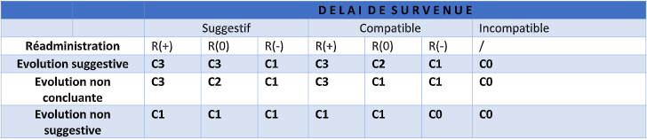
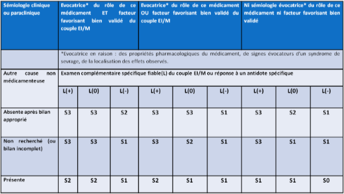
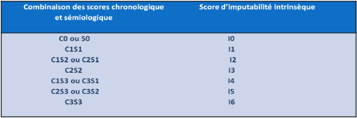

# Introduction
En pharmacovigilance, la causalité est évaluée en estimant la relation entre la prise d’un médicament et l’apparition d’effet(s) indésirable(s) et en suivant la procédure d’imputabilité. Cette causalité est définie à travers le calcul de trois scores, à savoir :
• Le score informatif : permet de faire la différence entre plusieurs médicaments suspects.
• L’imputabilité intrinsèque : donne des informations sur la causalité ou non d’effet(s) indésirable(s) après consommation d’un médicament en se basant sur des données cliniques et expérimentales (critères chronologiques et sémiologiques).
• L’imputabilité extrinsèqueL’imputabilité extrinsèque : procure des informations sur la causalité d’effet(s) indésirable(s) après la consommation d’un médicament en se basant sur les données bibliographiques en rapport avec le médicament étudi
# Principes d’utilisation
• Un cas valide de pharmacovigilance est défini par la présence de 4 éléments : l’auteur du rapport (le professionnel de santé), le patient (défini par son sexe, son âge et ses initiales), le médicament et l’effet indésirable. • L’imputabilité et le score informatif doivent être déterminés indépendamment pour chaque médicament. • L’évaluation prend en compte tous les composés du médicament : substance(s) active(s) et ses métabolites, les excipients...etc. • Pour chaque cas, l’imputabilité doit être déterminée pour tous les effets indésirables inclus dans le même diagnostique. • L’imputabilité est déterminée à un temps précis et peut changer avec le temps (cela dépend des informations additionnelles disponibles pour le cas et/ou le médicament).
# Score d’informativité (SI)
Il est devenu nécessaire d’ajouter un score d’informativité à la méthode d’imputabilité qui va être indépendant du score d’imputabilité, cela permet d’avoir un élément additionnel qui va différencier chaque médicament suspect d’un autre.
Cette catégorisation est contextuelle et évolue avec le temps. L’objectif de ce score est d’évaluer rapidement le niveau d’informativité (NI) disponible pour chaque médicament.
Les éléments a et b sont définis comme suit pour chaque paire Médicament-Effet indésirable :
a : temps d’apparition de l’effet indésirable par rapport à la durée d’exposition au médicament.
b : information concernant la poursuite, l’arrêt ou le changement de posologie du médicament.
L’informativité est classée en 3 niveaux pour chaque paire Médicament-Effet indésirable, selon les informations disponibles :
SI = NI2 : les éléments a et b sont spécifiés.
SI = NI1 : un des 2 éléments a ou b n’est pas spécifié.
SI = NI0 : les éléments a et b ne sont pas spécifiés.
# Imputabilité intrinsèque (score intrinsèque)
Basée sur 7 critères divisés en 2 catégories : chronologiques et sémiologiques. L’objectif est de calculer un score numérique basé uniquement sur des données cliniques et expérimentales.
A. Critères chronologiques
Le score chronologique est une combinaison entre 3 critères :Délai d’apparition des effets indésirables :
Peut être qualifié de :• Suggestif : Ex : choc anaphylactique après quelques minutes.
• Incompatible : délai insuffisant pour que l’événement apparaisse ; événement apparu avant la prise de médicament.
• Compatible : Autres cas : ni suggestif ni incompatible.
L’évolution de l’effet indésirable suite à l’arrêt/changements de posologie :
Peut être qualifiée de :• Suggestive : régression de l’événement.
• Non concluante : lorsqu'il n’est pas établi de relation entre la régression de l'événement et l'arrêt du traitement (régression retardée par rapport à l’arrêt) ou provoquée par un traitement symptomatique non spécifique réputé efficace sur ces troubles ou évolution inconnue ou recul insuffisant ou lésions de type irréversible ou médicament non arrêté ou survenue d’un décès.
• Non suggestive : allant à l’encontre du rôle du médicament : absence de régression d’un événement de type réversible (cytolyse hépatique ne régresse pas après un délai de 30 jours) ou régression complète malgré la poursuite du médicament.
Réadministration (rechallenge) :
Peut être qualifiée de :• Positive (R+) : l’événement récidive.
• Négative (R-) : l’événement ne récidive pas.
• Non concluante (R0) : non faite ou non évaluable.

Conformément à une première table de décision (tableau 1), la combinaison de ces 3 critères chronologiques aboutit à un score intermédiaire (C), avec 4 possibilités : Chronologie vraisemblable (C3), chronologie plausible (C2), chronologie douteuse (C1) et chronologie paraissant exclure le rôle du médicament (C0)
B. Critères sémiologiques
Rôle évocatif sémiologique d’un médicament.
Facteurs de prédisposition à une paire Effet indésirable-Médicament.
Examens complémentaires spécifiques fiables :
Le résultat d’un examen peut être positif (L+), négatif (L-) ou non disponible/non concluant (L0).
Cause non médicamenteuse :
3 cas possible : Cause non médicamenteuse absente après étude appropriée, cause non médicamenteuse présente et cause non médicamenteuse non étudiée, recherche incomplète ou non concluante.

Conformément à une seconde table de décision (tableau 2), la combinaison de ces 4 critères peut indiquer une sémiologie peut être vraisemblable (S3), plausible (S2) ou douteuse (S1). Les résultats des 2 tables de décision précédentes servent d’entrée à une troisième table finale (tableau 3) qui donne l’imputabilité intrinsèque avec des scores possibles d’I0 à I6.

# Imputabilité extrinsèque
Indépendante de l’imputabilité intrinsèque, ce type d’imputabilité est une cotation systématisée des données bibliographiques concernant l’événement en tant qu’effet éventuel du médicament. Cette cotation possède 4 degrés. Ils sont répartis comme suit :